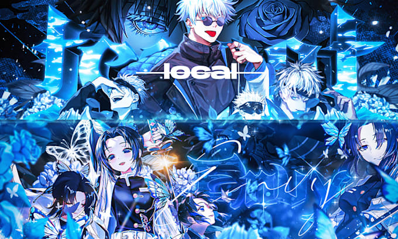

Bienvenido al mundo del anime
¿Que es el anime?
El anime es un estilo de animación que se originó en Japón y que se ha expandido a nivel mundial.
el anime es una forma de arte y entretenimiento que ha ganado popularidad en todo el mundo.
Desde sus inicios en Japón, el anime
ha logrado capturar la atención de personas de todas las edades y culturas, y ha influido en la moda, la música y otros aspectos de la cultura popular.
tiene una amplia variedad de géneros y estilos, desde la acción y la aventura hasta el romance y la comedia, lo que lo hace atractivo para una audiencia diversa.
Además, el anime a menudo aborda temas complejos y profundos, lo que lo convierte en una forma de entretenimiento que puede ser disfrutada tanto por niños como por adultos.
Características principales
Algunas de las características principales del anime incluyen:
- Estilo de dibujo único y detallado
- Personajes con expresiones faciales exageradas
- Historias complejas y tramas intrigueantes
- Una amplia variedad de géneros y temas
Diferencia entre anime y caricaturas
El anime es una forma de animación que se originó en Japón y que se ha expandido a nivel mundial,
mientras que las caricaturas son dibujos humorísticos que a menudo critican o exageran características
de personas o situaciones.
10 diferencias sobre el anime y las caricaturas
- Origen: El anime se originó en Japón, mientras que las caricaturas tienen sus raíces en diferentes países.
- Estilo de animación: El anime tiene un estilo de animación más detallado y realista, mientras que las caricaturas suelen ser más simples y exageradas.
- Temas: El anime aborda una amplia variedad de temas, desde la acción y la aventura hasta el romance y la comedia, mientras que las caricaturas suelen centrarse en el humor y la sátira.
- Duración: Los episodios de anime suelen ser más largos que los de las caricaturas, con una duración promedio de 20 a 30 minutos por episodio.
- Audiencia: El anime está dirigido a una audiencia más amplia, incluyendo tanto a niños como a adultos, mientras que las caricaturas suelen estar dirigidas principalmente a los niños.
- Tramas complejas: El anime a menudo presenta tramas complejas y personajes desarrollados, mientras que las caricaturas suelen tener tramas más simples y personajes menos desarrollados.
- Estilo de dibujo: El anime tiene un estilo de dibujo único y detallado, con personajes con expresiones faciales exageradas, mientras que las caricaturas suelen tener un estilo de dibujo más simple y caricaturesco.
- Cultura: El anime refleja la cultura japonesa y sus valores, mientras que las caricaturas reflejan la cultura del país en el que se producen.
- Popularidad: El anime ha ganado popularidad en todo el mundo, mientras que las caricaturas son más populares en sus países de origen.
- Merchandising: El anime suele tener una gran cantidad de merchandising asociado, como figuras de acción y ropa, mientras que las caricaturas suelen tener menos merchandising asociado.
Géneros del anime
- Action
- Adventure
- Comedy
- Drama
- Fantasy
- Horror
- Romance
- Sci-Fi
- Slice of Life
- Sports
¿Por qué es tan popular?
El anime es popular por varias razones, incluyendo su estilo de animación único, sus historias complejas y personajes desarrollados, y su capacidad para abordar una amplia variedad de temas y géneros. Además, el anime ha ganado popularidad en todo el mundo gracias a la globalización y la facilidad de acceso a través de plataformas de transmisión en línea.